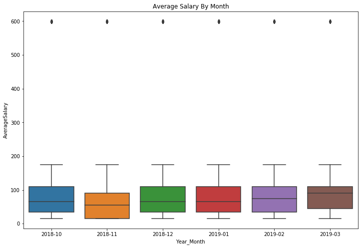
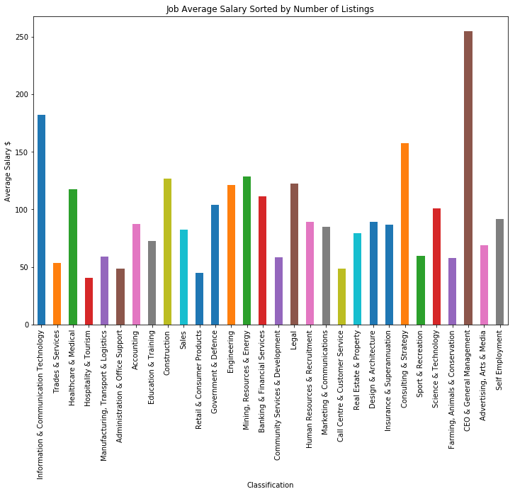

Part 2 - Data Analysis and Interpretation
2.1 - Job Metadata
After dataset cleaning has been performed, there remains 309,870 data rows. The mean salary is $89.70 with a standard deviation of 108.55. The minimum potential salary is listed as $0 with the highest maximum at $999. It should be noted that the standard deviation for ‘HighestSalary’ is much bigger than ‘LowestSalary’ with values of 177.42 and 51.00 respectively.
| Average Salary ($) | Lowest Salary ($) | Highest Salary($) | |
|---|---|---|---|
| Mean | 89.70 | 65.46 | 133.93 |
| Standard Deviation | 108.55 | 51.00 | 177.42 |
| Minimum | 15.00 | 0.00 | 30.00 |
| Median | 65.00 | 60.00 | 70.00 |
| Max | 599.50 | 200.00 | 999.00 |
As for categories within the dataset, for sectors there is a total of 30 sectors with 396 total sub-sectors for classification of job listings. In addition to this there is 65 locations with the main cities (Brisbane, Melbourne, Perth and Sydney) having a total of 22 smaller locations that the cities are broken down into.
Salary Disribution
The first analysis of the Job metadata was to create a histogram of the job salaries to analyse the distribution of the salaries. As expected, lower salaries are much more common than higher salaries with the 3 most common bins by a large amount being 0-20, 40-60 and 60-80. This is to be expected however given the typical hierarchical structure of jobs with the majority of jobs being low to mid paying.
Figure 1: Histogram of Average Salary for all Listings
The histogram demonstrates a high number outlier jobs paying $580 to $600. When analysing the market by sectors, exploratory data analysis will be used on the outliers to determine which job sectors are responsible for the outliers.
Average Salary Over Time
Figure 2: Average Salary by Grouped by Month Boxplot
The boxplot above for the average salary by month reveals that while salary is fairly stable, there was a sharp drop in November compared to other months. The predicted cause of this is that Christmas casual listings in retail spiked in November, causing the average salary for that month to be lower in comparison to the other months.
However, this boxplot fails to demonstrate another feature with the data which is present in the time series graph below (see Figure 3); that there was a huge spike in the average salary around early December.
Figure 3: Time-series Graph for Salary
The large spike in early December is also evident on the rolling averages, however slightly delayed and less prominent. This is because rolling averages use an average of the past n-days, meaning that the data will be slower to respond to change.
The hypothesised cause for the spike in early December is people leaving high pay, high stress jobs in order to spend time with their family over Christmas. This results in a greater demand for people in these high paying positions leading to more SEEK listings and a spike in the average salary.
Number of Job Listings Time Analysis
Analysing the daily job listings over time reveals a trend downwards. This is revealed in Figure 4 below which demonstrates the average number of daily job listings with exponential smoothing implemented, however this trend downwards may just be because of seasonality. Late November/December reveals a dip in the number of job listings which then spiked again around new year before dipping again.
As for the monthly pattern of posting, it appears that the majority of jobs are posted in the middle of the month (see Figure 5). From the 23rd to the 28th in the month there appears to be overall a lower rate of posting.
Figure 4: Number of Daily Job Listings with Exponential Weighted Smoothing
Figure 5: Number of Job Listings Grouped by Day of the Month
2.2 - Market by Locations
Figure 6: Top 10 Job Locations
As is expected, the main cities are where the majority of job listings appear in the major capital cities in Australia. Gold coast ranks 8th on this scale with 3581 job listings. Sydney is by far the largest with 17 times the number of listings at 60462 total listings. The number of job listings then appears to exponentially decrease when moving from the major cities to the minor cities.
Analysis of the average salary at each location revealed an unexpected result; the top paying locations aren’t always the large cities. For example, the small town of Port Headland was ranked 7th with an average salary of $99.53 despite being a small country town.
Figure 7: Job Categories in Port Headland
Analysis of the job categories in port headland reveal that the largest category by a fair amount is Mining, Resources & Energy. This may explain the unusually high salary for this area as the average salary for this sector is $128.66. This is more than likely the explanation for any small country town that has an unusually high salary, due to the high pay capacity of mining and energy jobs.
2.3 - Market by Sectors
Figure 8: Number of Job Listings by Sector
Analysis of the above bar chart reveals the sectors that are in high demand. The largest sector by some margin is ICT with 22715 total job listings in the dataset. Following this is trades & services along with healthcare & medial. Self employment was the least common category which is unsuprising considering SEEK is designed to allow companies to find employees.
Figure 9: Number of Job Listings by Sector Over Time (30 day rolling average)
It appears in the number of job listings by sector there is continual decline until the start of December when a huge re-emergence in the number of job listings appears. Because the trend is being analysed over such a short timeframe. To assist with looking at the trend, linear regression will be implemented.
Figure 10 below demonstrates the implementation of linear regression. It is evident in the diagram that all sectors show an overall downtrend. Trades show the quickest decline, while all other fields show similar yet slower downtrends. However, because the data is only over 80 days, it is difficault to draw any solid conclusions.
Figure 10: Trend of Job Listings with Linear Regression 
Figure 11: Average Job Salary each Sector Sorted by Number of Listings (left to right)
Unsurprisingly, the highest paying classification is CEO & General Management followed by ICT. However, one thing to note is the difference between job availability for the two classifications as is shown in the number of job listings per sector (see Figure 8). This puts ICT in a better position for going into as a potential career path due to the higher demand.

Figure 12: First 5 Outliers where the Average Salary is 580-600
Analysis of the outliers appear to reveal that all if them contain an average salary of $599.5. This is an average between 200 and 999, which is the low and high salary for all these jobs. The predicted reason for this same salary is due to the fact that all of these jobs are listed at the highest possible price range allowed on SEEK.
Out of these outlier jobs, ICT, Healthcare, Construction, Mining and Government are all prevalent sectors in the data further supporting the idea that these are the highest paying job categories.